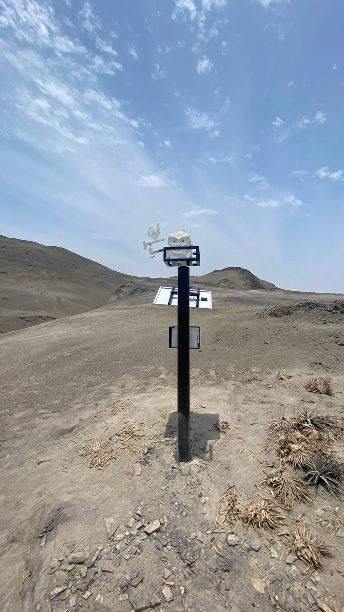
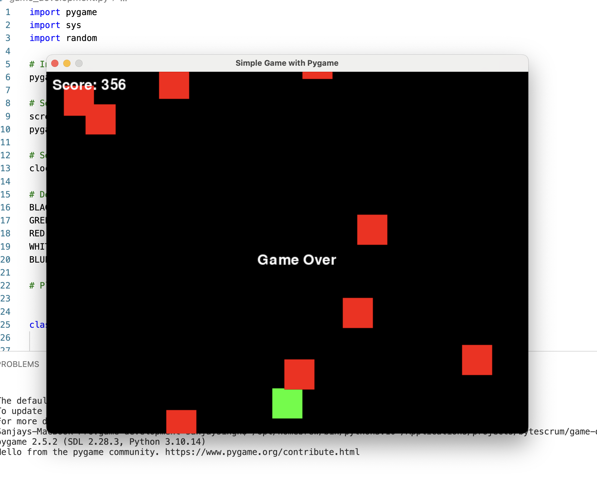

Sebastián Silva
Soy estudiante de Ingeniería Informática en la Universidad Cayetano Heredia.Estoy interesado en la ciberseguridad por la identificación de vulnerabilidades y la implementación de soluciones eficaces para proteger la información y contribuir a un entorno digital más seguro, a través de la innovación y el trabajo en equipo.
Proyectos
- Monitoreo de la calidad del aire y el suelo
- Base de Datos - Plataforma de intercambios
- Base de Datos - Juego de Obstaculos
Participé en el desarrollo de un sistema de monitoreo de la calidad del aire y del suelo en el campus universitario, utilizando una plataforma IoT basada en ESP32 y múltiples sensores ambientales (CO₂, O₃, PM2.5, humedad, temperatura, radiación solar, entre otros). El objetivo fue generar datos en tiempo real para evaluar condiciones ambientales y contribuir a estrategias sostenibles.
Este proyecto, es una plataforma de intercambio o trueque que integra Python, JavaScript, HTML y CSS para construir una aplicación que permite gestionar y conectar usuarios interesados en intercambiar productos. Además, incluye consultas SQL y modelos de base de datos que estructuran la información de usuarios, ofertas y transacciones dentro del sistema
Desarrollo de un videojuego en Python con Pygame, conectado a una base de datos MySQL para gestionar usuarios, partidas y puntajes. El jugador controla un vehículo que debe evitar obstáculos en movimiento, mientras el sistema registra los eventos y resultados en tiempo real.
